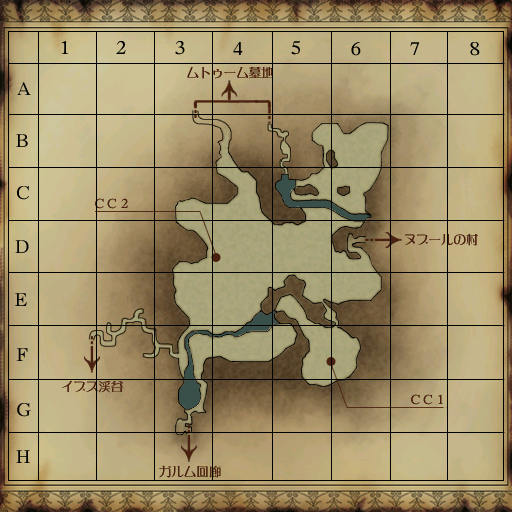

一覧War Age ガイド
War Age のしくみ
- War Age はビスク軍とエルガディン軍が戦う時代。どちらの軍にも入らない中立もいる。
- 違う軍のプレイヤーは敵で、攻撃できる（安全なマップを除く）。中立どうしは、同じパーティーでなければ攻撃し合える。亡命中のプレイヤーは誰からも攻撃され、誰でも攻撃できる。軍に属するモンスターも、違う軍なら敵になる。
- パーティーは同じ軍どうしでしか組めず、亡命中のプレイヤーとは組めない。War Age のマップでは 5 秒ごとに確認され、違う軍や亡命中のメンバーがいると「敵対勢力」としてパーティーから外れる。
- 勢力チャンネルは War Age で軍に属しているときだけ使え、同じ軍のメンバーにだけ届く。
- 違う軍の露店は、オプションで敵対勢力との取引を許可しているときだけ開ける。レンタル倉庫・レンタル銀行は War Age では使えない。
- テクニックの威力の伸びが現代と違う（下の「テクニックの違い」）。闘技場でも同じ。
- マップ一覧：War Age
死んだとき
- War Age では死んでも幽霊にならない。
- 死ぬと持ち物から最大 6 個が死体に落ちる。「死亡時優先的にドロップする」品が先に選ばれ、「死亡時ドロップしない」品は落ちない。
- アイテムが落ちた死体は 60 秒で消え、誰でもすぐに拾える（拾う権利の保護がない）。
- 死んだあと、60 ＋ 0.6 × 死体回収スキル 秒で自動的に帰還する。
- 敵軍のプレイヤーに倒されると戦績を失う（下の「階級と戦績」）。
- 次のマップでは死んでもアイテムが落ちず、戦績も増減しない：ダーイン山(War_Age)、イルヴァーナ渓谷(War_Age)。
戦禍の星
持っていると、耐久 1 につき 1 個ぶん、落ちるアイテムの代わりになる。耐久が残ると星そのものが落ちる。複数持っていれば合計の耐久で数える。
| 星の耐久 | 落ちる数 | 結果 |
|---|---|---|
| 3 | 2 | 星の耐久が 1 になり、星が落ちる（ほかは落ちない） |
| 2 | 2 | 星がなくなる（何も落ちない） |
| 1 | 2 | 星がなくなり、アイテムが 1 個落ちる |
階級と戦績
- 階級は戦績（0〜9,999）で決まる。戦績が足りなくなると降格する。
- 敵軍のプレイヤーを倒すと、相手の階級の「失う戦績」を得る。ただし自分の階級が相手より 4 つ以上上だと得られない。ペットが倒したときは飼い主のものになる。
- 倒した人と同じパーティーで、倒れた相手から 100 m 以内にいたメンバーは、それぞれ 失う戦績 × (1 ＋ 0.05 × (人数 − 1)) ÷ 人数（切り捨て）を得る。倒した本人はそのまま全部を得る。
- 敵軍のプレイヤーに倒されると、自分の階級の「失う戦績」を失う。
- 亡命中は得ることも失うこともない。
- 戦績ノルマ：Commander 以上になると「○ ポイントを 24 時間以内に貯めないとランクダウン」が設定される。達成できないと、その階級の「失う戦績」を失う。残り 2 時間・1 時間・10 分・5 分で知らせが出る。
| 階級 | 必要な戦績 | 失う戦績（倒した人が得る） | ノルマ（24 時間） | 日給（Gold） | 給料を受け取るとき |
|---|---|---|---|---|---|
| Amateur | 0 | 1 | — | 200 | — |
| Newbie | 1 | 2 | — | 300 | — |
| Guard | 6 | 3 | — | 600 | — |
| Soldier | 11 | 4 | — | 1,000 | — |
| Commander | 21 | 6 | 1 | 1,500 | 戦績 −1 |
| Captain | 31 | 8 | 3 | 2,500 | 戦績 −1 |
| Warlord | 51 | 10 | 5 | 5,000 | 戦績 −2 |
パーティーで分けるとき
Warlord（失う戦績 10）を倒したとき、パーティーのメンバーがそれぞれ得る戦績。
| 人数 | 倍率 | 1 人あたり |
|---|---|---|
| 1 | 1 | 10 |
| 2 | 0.525 | 5 |
| 3 | 0.367 | 3 |
| 4 | 0.287 | 2 |
| 5 | 0.24 | 2 |
給料
- 給料（日給）は自軍の総大将からもらえる：エルガディン軍 は ミクル（エルガディン王国）、ビスク軍 は アクセル（ビスク港(War_Age)）。1 日 1 回。
- Amateur・Newbie・Guard は条件なしでもらえる。Soldier 以上はキャラクターのレベル 60 以上が必要（足りないと「その鈍った体は！」と断られる）。キャラクターのレベルはスキルではなく能力値から計算される値で、(最大HP ÷ 3 ＋ 攻撃力 ＋ 命中 ＋ 防御力 ＋ 回避 ＋ 魔力 ＋ 属性抵抗 5 種) ÷ 11（攻撃力・命中は手に持っている武器込み）。装備でも変わる。
- Commander と Captain は受け取るたびに戦績 −1、Warlord は −2。
- 階級装備をなくしたときは、総大将から新しいものをもらえる。
- ブランク ノアピース を持っていると、総大将が「各支配地域と自軍のアルターを結ぶ古代遺物の力」をくれる（支配した地域へ移動できるようになる）。
階級装備
階級装備は War Age 以外では性能が 0.7 倍になる（各アイテムのページに値がある）。
ほかに War Age 以外で 0.7 倍になる装備：エルガディン ソルジャー マントル <ミシャグジー>、ゴリゾノ銘入りパワードスーツ装備セット
拠点と支配地域の落とし方
- War Age のフィールドには拠点（CC）と支配地域（DA）がある。それぞれのフラッグ（下の各表の上）を倒すと支配が変わる。
- 結果は倒した人で決まる：ビスク軍・エルガディン軍の人が倒すとその軍の支配になり、その軍の守備隊が現れる。中立・亡命中の人が倒すと支配が解かれ、中立に戻る。
- 表で「倒しておく」になっている守備隊が 1 体でも残っていると、フラッグを倒しても支配は変わらない。守備隊はどの軍の支配かで入れ替わる（表には全部の種類を載せている）ので、そのとき出ているものを全滅させてからフラッグを倒す。軍旗も守備隊に数えられる。
- 支配が変わると、War Age のすべてのマップにアナウンスが流れる（「○○ は ビスク軍 の支配下に置かれました」「○○ の支配は解かれました」）。
レクスール・ヒルズ(War_Age)

Lexur-CC1
フラッグ：イビル ウィスプ（Lv 61〜62、18 か所）
フラッグも守備隊のグループに入っている。フラッグが何体もいるときは、どれを倒しても判定され、ほかのフラッグも数えられるので、最後の 1 体を倒したときに支配が変わる。
| いるとき | 守備隊（フラッグを含む） | ビスク軍が倒すとき | エルガディン軍が倒すとき | 中立・亡命中が倒すとき |
|---|---|---|---|---|
| 中立のとき | イビル ウィスプ ×6（Lv 61〜62） | 倒しておく | 倒しておく | 倒しておく |
| 中立のとき | イーヴァ（Lv 41） | 倒しておく | 倒しておく | — |
| ビスク軍の支配のとき | イビル ウィスプ ×6（Lv 61〜62）、イーヴァ（Lv 41）、スプリガン バンカー（Lv 50）、スプリガン リペアー（Lv 50）、ビスク軍旗 ×12 | — | 倒しておく | 倒しておく |
| エルガディン軍の支配のとき | イビル ウィスプ ×6（Lv 61〜62）、イーヴァ（Lv 41）、スプリガン バンカー（Lv 50）、スプリガン リペアー（Lv 50）、エルガディン軍旗 ×12 | 倒しておく | — | 倒しておく |
- ビスク軍の支配になると現れる：イーヴァ（Lv 41）、スプリガン バンカー（Lv 50）、スプリガン リペアー（Lv 50）、ビスク軍旗 ×12、ブルーガ ロード ×12（Lv 40）
- エルガディン軍の支配になると現れる：イーヴァ（Lv 41）、スプリガン バンカー（Lv 50）、スプリガン リペアー（Lv 50）、エルガディン軍旗 ×12、ブルーガ ロード ×12（Lv 40）
Lexur-CC2
フラッグ：ナイト クイーン（Lv 72、3 か所）
守備隊の条件はない。フラッグを倒すだけで支配が変わる。
- ビスク軍の支配になると現れる：ナイト クイーン（Lv 72）、サキュバス グローサー（Lv 50）、サキュバス バンカー（Lv 50）、ビスク軍旗 ×13、フォート グリフォン ×4（Lv 42）
- エルガディン軍の支配になると現れる：ナイト クイーン（Lv 72）、サキュバス グローサー（Lv 50）、サキュバス バンカー（Lv 50）、エルガディン軍旗 ×13、フォート グリフォン ×4（Lv 42）
Lexur-CC3
フラッグ：オーク ハイプリースト（Lv 65、3 か所）
守備隊の条件はない。フラッグを倒すだけで支配が変わる。
- ビスク軍の支配になると現れる：オーク ハイプリースト（Lv 65）、オーク グローサー（Lv 50）、オーク バンカー（Lv 50）、ビスク軍旗 ×11、オーク プリースト ×4（Lv 36）、オーク ウィッチ ×4（Lv 36〜41）、ストーン ゴーレム ×4（Lv 41）、クレイ ゴーレム ×12（Lv 41）
- エルガディン軍の支配になると現れる：オーク ハイプリースト（Lv 65）、オーク グローサー（Lv 30）、オーク バンカー（Lv 50）、エルガディン軍旗 ×11、オーク プリースト ×4（Lv 36）、オーク ウィッチ ×4（Lv 36〜41）、ストーン ゴーレム ×4（Lv 41）、クレイ ゴーレム ×12（Lv 41）
Lexur-CC4
フラッグ：テスラ（Lv 75、3 か所）、ミスラ（Lv 75、3 か所）
フラッグも守備隊のグループに入っている。フラッグが何体もいるときは、どれを倒しても判定され、ほかのフラッグも数えられるので、最後の 1 体を倒したときに支配が変わる。
| いるとき | 守備隊（フラッグを含む） | ビスク軍が倒すとき | エルガディン軍が倒すとき | 中立・亡命中が倒すとき |
|---|---|---|---|---|
| 中立のとき | テスラ（Lv 75）、ミスラ（Lv 75） | 倒しておく | 倒しておく | 倒しておく |
| ビスク軍の支配のとき | テスラ（Lv 75）、ミスラ（Lv 75）、ギガース コック（Lv 50）、ギガース バンカー（Lv 50）、ビスク軍旗 ×12 | — | 倒しておく | 倒しておく |
| エルガディン軍の支配のとき | テスラ（Lv 75）、ミスラ（Lv 75）、ギガース コック（Lv 50）、ギガース バンカー（Lv 50）、エルガディン軍旗 ×12 | 倒しておく | — | 倒しておく |
- ビスク軍の支配になると現れる：テスラ（Lv 75）、ミスラ（Lv 75）、ギガース コック（Lv 50）、ギガース バンカー（Lv 50）、ビスク軍旗 ×12、ギガース スレイブ ×8（Lv 50〜55）
- エルガディン軍の支配になると現れる：テスラ（Lv 75）、ミスラ（Lv 75）、ギガース コック（Lv 50）、ギガース バンカー（Lv 50）、エルガディン軍旗 ×12、ギガース スレイブ ×8（Lv 50〜55）
ガルム回廊(War_Age)

Garm-CC1
フラッグ：長老コボルト（Lv 60、3 か所）、コボルト コマンダー（Lv 38、12 か所）
フラッグも守備隊のグループに入っている。フラッグが何体もいるときは、どれを倒しても判定され、ほかのフラッグも数えられるので、最後の 1 体を倒したときに支配が変わる。
| いるとき | 守備隊（フラッグを含む） | ビスク軍が倒すとき | エルガディン軍が倒すとき | 中立・亡命中が倒すとき |
|---|---|---|---|---|
| 中立のとき | 長老コボルト（Lv 60）、コボルト コマンダー ×4（Lv 38） | 倒しておく | 倒しておく | — |
| ビスク軍の支配のとき | 長老コボルト（Lv 60）、コボルト コマンダー ×4（Lv 38）、コボルト リペアー（Lv 38）、ビスク軍旗 ×13 | — | 倒しておく | 倒しておく |
| エルガディン軍の支配のとき | 長老コボルト（Lv 60）、コボルト コマンダー ×4（Lv 38）、コボルト リペアー（Lv 38）、エルガディン軍旗 ×13 | 倒しておく | — | 倒しておく |
- ビスク軍の支配になると現れる：長老コボルト（Lv 60）、コボルト コマンダー ×4（Lv 38）、コボルト リペアー（Lv 38）、ビスク軍旗 ×13、コボルト ガード ×12（Lv 38）
- エルガディン軍の支配になると現れる：長老コボルト（Lv 60）、コボルト コマンダー ×4（Lv 38）、コボルト リペアー（Lv 38）、エルガディン軍旗 ×13、コボルト ガード ×12（Lv 38）
Garm-CC2
フラッグ：ウンディーネ ガーディアン（Lv 90、3 か所）
フラッグも守備隊のグループに入っている。フラッグが何体もいるときは、どれを倒しても判定され、ほかのフラッグも数えられるので、最後の 1 体を倒したときに支配が変わる。
| いるとき | 守備隊（フラッグを含む） | ビスク軍が倒すとき | エルガディン軍が倒すとき | 中立・亡命中が倒すとき |
|---|---|---|---|---|
| 中立のとき | ウンディーネ ガーディアン（Lv 90） | 倒しておく | 倒しておく | — |
| ビスク軍の支配のとき | ウンディーネ ガーディアン（Lv 90）、ビスク軍旗 ×3、ウンディーネ バンカー（Lv 60） | — | 倒しておく | 倒しておく |
| エルガディン軍の支配のとき | ウンディーネ ガーディアン（Lv 90）、エルガディン軍旗 ×3、ウンディーネ バンカー（Lv 60） | 倒しておく | — | 倒しておく |
- ビスク軍の支配になると現れる：ウンディーネ ガーディアン ×3（Lv 90）、ビスク軍旗 ×3、ウンディーネ バンカー ×2（Lv 60）、エルガディン軍旗 ×3
- エルガディン軍の支配になると現れる：ウンディーネ ガーディアン ×3（Lv 90）、エルガディン軍旗 ×3、ウンディーネ バンカー ×2（Lv 60）、ビスク軍旗 ×3
イルヴァーナ渓谷(War_Age)

Irvana-CC1
フラッグ：ローグ プリンセス（Lv 70、3 か所）
フラッグも守備隊のグループに入っている。フラッグが何体もいるときは、どれを倒しても判定され、ほかのフラッグも数えられるので、最後の 1 体を倒したときに支配が変わる。
得点式のフラッグ：倒した人の軍に 3 点（守備隊が残っていると取り消し）。いちばん得点の多い軍の支配になり、得点はそのたびに 0 に戻る。なので、守備隊の条件を満たして倒せば倒した人の軍の支配になる。
| いるとき | 守備隊（フラッグを含む） | ビスク軍が倒すとき | エルガディン軍が倒すとき | 中立・亡命中が倒すとき |
|---|---|---|---|---|
| 中立のとき | ウォー ウルフ ×35（Lv 45） | 倒しておく | 倒しておく | 倒しておく |
| ビスク軍の支配のとき | ウォー ウルフ ×35（Lv 45） | — | 倒しておく | 倒しておく |
| エルガディン軍の支配のとき | ウォー ウルフ ×35（Lv 45） | 倒しておく | — | 倒しておく |
フラッグ：ウォー ウルフ（Lv 45、105 か所）
フラッグも守備隊のグループに入っている。フラッグが何体もいるときは、どれを倒しても判定され、ほかのフラッグも数えられるので、最後の 1 体を倒したときに支配が変わる。
得点式のフラッグ：倒した人の軍に 1 点（守備隊が残っていると取り消し）。いちばん得点の多い軍の支配になり、得点はそのたびに 0 に戻る。なので、守備隊の条件を満たして倒せば倒した人の軍の支配になる。
| いるとき | 守備隊（フラッグを含む） | ビスク軍が倒すとき | エルガディン軍が倒すとき | 中立・亡命中が倒すとき |
|---|---|---|---|---|
| 中立のとき | ローグ プリンセス（Lv 70）、ウォー ウルフ ×35（Lv 45） | 倒しておく | 倒しておく | 倒しておく |
| ビスク軍の支配のとき | ローグ プリンセス（Lv 70）、アマゾネス バンカー（Lv 45）、アマゾネス リペアー（Lv 45）、ビスク軍旗 ×17、ウォー ウルフ ×35（Lv 45） | — | 倒しておく | 倒しておく |
| エルガディン軍の支配のとき | ローグ プリンセス（Lv 70）、アマゾネス バンカー（Lv 45）、アマゾネス リペアー（Lv 45）、エルガディン軍旗 ×17、ウォー ウルフ ×35（Lv 45） | 倒しておく | — | 倒しておく |
Irvana-CC2
フラッグ：オーク レインフォール（Lv 80、12 か所）
守備隊の条件はない。フラッグを倒すだけで支配が変わる。
- ビスク軍の支配になると現れる：オーク レインフォール ×12（Lv 80）、ビスク軍旗 ×19、オーク グローサー（Lv 50）、オーク バンカー（Lv 50）、オーク コマンダー ×8（Lv 50）
- エルガディン軍の支配になると現れる：オーク レインフォール ×12（Lv 80）、エルガディン軍旗 ×19、オーク グローサー（Lv 50）、オーク バンカー（Lv 50）、オーク コマンダー ×8（Lv 50）
Irvana-CC3
フラッグ：イクシオン ソーサラー（Lv 68、6 か所）
フラッグも守備隊のグループに入っている。フラッグが何体もいるときは、どれを倒しても判定され、ほかのフラッグも数えられるので、最後の 1 体を倒したときに支配が変わる。
| いるとき | 守備隊（フラッグを含む） | ビスク軍が倒すとき | エルガディン軍が倒すとき | 中立・亡命中が倒すとき |
|---|---|---|---|---|
| 中立のとき | イクシオン ソーサラー ×2（Lv 68） | 倒しておく | 倒しておく | — |
| ビスク軍の支配のとき | イクシオン ソーサラー ×2（Lv 68）、イクシオン グローサー（Lv 40）、イクシオン バンカー（Lv 40）、ビスク軍旗 ×13 | — | 倒しておく | 倒しておく |
| エルガディン軍の支配のとき | イクシオン ソーサラー ×2（Lv 68）、イクシオン グローサー（Lv 40）、イクシオン バンカー（Lv 40）、エルガディン軍旗 ×13 | 倒しておく | — | 倒しておく |
- ビスク軍の支配になると現れる：イクシオン ソーサラー ×2（Lv 68）、イクシオン グローサー（Lv 40）、イクシオン バンカー（Lv 40）、ビスク軍旗 ×13、ジャイアント ゴーレム ×8（Lv 55）
- エルガディン軍の支配になると現れる：イクシオン ソーサラー ×2（Lv 68）、イクシオン グローサー（Lv 40）、イクシオン バンカー（Lv 40）、エルガディン軍旗 ×13、ジャイアント ゴーレム ×8（Lv 55）
Irvana-CC4
フラッグ：ゴッドファーザー（Lv 82〜88、3 か所）
フラッグも守備隊のグループに入っている。フラッグが何体もいるときは、どれを倒しても判定され、ほかのフラッグも数えられるので、最後の 1 体を倒したときに支配が変わる。
| いるとき | 守備隊（フラッグを含む） | ビスク軍が倒すとき | エルガディン軍が倒すとき | 中立・亡命中が倒すとき |
|---|---|---|---|---|
| 中立のとき | ゴッドファーザー（Lv 82〜88） | 倒しておく | 倒しておく | 倒しておく |
| ビスク軍の支配のとき | ゴッドファーザー（Lv 82〜88）、ビスク軍旗 ×7、ドワーヴン ベンダー（Lv 40）、ドワーヴン バンカー（Lv 40） | — | 倒しておく | 倒しておく |
| エルガディン軍の支配のとき | ゴッドファーザー（Lv 82〜88）、エルガディン軍旗 ×7、ドワーヴン ベンダー（Lv 40）、ドワーヴン バンカー（Lv 40） | 倒しておく | — | 倒しておく |
- ビスク軍の支配になると現れる：ゴッドファーザー（Lv 82〜88）、ビスク軍旗 ×7、ドワーヴン ベンダー（Lv 40）、ドワーヴン バンカー（Lv 40）、ドワーヴン コマンドー ×4（Lv 62〜65）、ドワーヴン キーパー ×8（Lv 55〜58）、ドワーヴン スナイパー ×8（Lv 55〜58）、ドワーヴン パンク ×8（Lv 45〜48）
- エルガディン軍の支配になると現れる：ゴッドファーザー（Lv 82〜88）、エルガディン軍旗 ×7、ドワーヴン ベンダー（Lv 40）、ドワーヴン バンカー（Lv 40）、ドワーヴン コマンドー ×4（Lv 62〜65）、ドワーヴン キーパー ×8（Lv 55〜58）、ドワーヴン スナイパー ×8（Lv 55〜58）、ドワーヴン パンク ×8（Lv 45〜48）
アルビーズの森(War_Age)

Alvis-CC1
フラッグ：ウルド（Lv 85、3 か所）、スクルド（Lv 85、3 か所）、ヴェルダンディ（Lv 85、3 か所）
フラッグも守備隊のグループに入っている。フラッグが何体もいるときは、どれを倒しても判定され、ほかのフラッグも数えられるので、最後の 1 体を倒したときに支配が変わる。
| いるとき | 守備隊（フラッグを含む） | ビスク軍が倒すとき | エルガディン軍が倒すとき | 中立・亡命中が倒すとき |
|---|---|---|---|---|
| 中立のとき | スクルド（Lv 85）、ウルド（Lv 85）、ヴェルダンディ（Lv 85） | 倒しておく | 倒しておく | 倒しておく |
| ビスク軍の支配のとき | スクルド（Lv 85）、ウルド（Lv 85）、ヴェルダンディ（Lv 85）、ゴーゴン バンカー（Lv 50）、ゴーゴン リペアー（Lv 50）、ビスク軍旗 ×10 | — | 倒しておく | 倒しておく |
| エルガディン軍の支配のとき | スクルド（Lv 85）、ウルド（Lv 85）、ヴェルダンディ（Lv 85）、ゴーゴン バンカー（Lv 50）、ゴーゴン リペアー（Lv 50）、エルガディン軍旗 ×10 | 倒しておく | — | 倒しておく |
- ビスク軍の支配になると現れる：スクルド（Lv 85）、ウルド（Lv 85）、ヴェルダンディ（Lv 85）、ゴーゴン バンカー（Lv 50）、ゴーゴン リペアー（Lv 50）、ビスク軍旗 ×10、ディバイン サーペント ×82（Lv 20〜25）
- エルガディン軍の支配になると現れる：スクルド（Lv 85）、ウルド（Lv 85）、ヴェルダンディ（Lv 85）、ゴーゴン バンカー（Lv 50）、ゴーゴン リペアー（Lv 50）、エルガディン軍旗 ×10、ディバイン サーペント ×82（Lv 20〜25）
Alvis-CC2
フラッグ：三男 マタ（Lv 81、3 か所）
フラッグも守備隊のグループに入っている。フラッグが何体もいるときは、どれを倒しても判定され、ほかのフラッグも数えられるので、最後の 1 体を倒したときに支配が変わる。
| いるとき | 守備隊（フラッグを含む） | ビスク軍が倒すとき | エルガディン軍が倒すとき | 中立・亡命中が倒すとき |
|---|---|---|---|---|
| 中立のとき | 長男 ロク（Lv 85）、次男 タウイ（Lv 82）、三男 マタ（Lv 81） | 倒しておく | 倒しておく | 倒しておく |
| ビスク軍の支配のとき | 長男 ロク（Lv 85）、次男 タウイ（Lv 82）、三男 マタ（Lv 81）、スプリガン グローサー（Lv 40）、スプリガン バンカー（Lv 40）、ビスク軍旗 ×13 | — | 倒しておく | 倒しておく |
| エルガディン軍の支配のとき | 長男 ロク（Lv 85）、次男 タウイ（Lv 82）、三男 マタ（Lv 81）、スプリガン グローサー（Lv 40）、スプリガン バンカー（Lv 40）、エルガディン軍旗 ×13 | 倒しておく | — | 倒しておく |
- ビスク軍の支配になると現れる：長男 ロク（Lv 85）、次男 タウイ（Lv 82）、三男 マタ（Lv 81）、スプリガン グローサー（Lv 40）、スプリガン バンカー（Lv 40）、ビスク軍旗 ×13、オルヴァン スレイブ ×12（Lv 70）、スプリガン ソルジャー ×12（Lv 50〜55）
- エルガディン軍の支配になると現れる：長男 ロク（Lv 85）、次男 タウイ（Lv 82）、三男 マタ（Lv 81）、スプリガン グローサー（Lv 40）、スプリガン バンカー（Lv 40）、エルガディン軍旗 ×13、オルヴァン スレイブ ×12（Lv 70）、スプリガン ソルジャー ×12（Lv 50〜55）
ヴァルグリンドの巣穴(War_Age)

ヴァルグリンドの巣穴(Domination Area)
フラッグ：クイーン エルーカス（Lv 77、3 か所）
守備隊の条件はない。フラッグを倒すだけで支配が変わる。
- ビスク軍の支配になると現れる：クイーン エルーカス（Lv 77）、アマゾネス バンカー（Lv 30）、アマゾネス グローサー（Lv 30）、溶鉱炉、金床、カカシ ×3、ビスク軍旗 ×11
- エルガディン軍の支配になると現れる：クイーン エルーカス（Lv 77）、アマゾネス バンカー（Lv 30）、アマゾネス グローサー（Lv 30）、溶鉱炉、金床、カカシ ×3、エルガディン軍旗 ×11
ムトゥーム墓地(War_Age)

ムトゥーム墓地(Domination Area)
フラッグ：デミトリー（Lv 100、3 か所）
守備隊の条件はない。フラッグを倒すだけで支配が変わる。
戦争イベントの流れ
戦争イベントでは、次の順にアナウンスが流れる。
- 5 分後にヌブールの村銀行前で開会式
- 10 分後に戦闘開始（両軍は準備）
- 第 1 戦：カウントダウン 3・2・1 のあと「戦闘開始！！」、終わると「そこまで！！」と勝った軍の発表
- 10 分後に第 2 戦、続いて最終戦
- 5 分後にヌブールの村銀行前で閉会式
奇跡と呪いの起こし方
- 始まり方は 2 つ：ある軍が各地を支配下に置く（「○○勢力が圧倒的な力で各地を支配下に置いた！」）か、ノア・ストーンがある軍の本拠地に着く（「ノア・ストーンが ○○勢力の本拠地に到達した！」）。その軍の本拠地で「奇跡の時が訪れた！」、相手の本拠地で「呪いの時が訪れた！」となる。
- 続くのはゲーム内 8 時間（現実の 28.8 分）。終わると元に戻る。
- 奇跡の時：起こした軍の本拠地の天気が晴れになり、下の表のものが現れる。モラ 7 賢者がいるのはエルガディン王国と城下町ビスク 中央エリア（下の「モラ 7 賢者の奇跡」）。
- 呪いの時：相手の軍の本拠地の天気が雨になり、マブの使徒などが現れる。
- 表のマップの下の軍は、そのマップを本拠地にしている軍。その軍が起こせば「奇跡の時」、相手の軍が起こせば「呪いの時」になる。
| マップ（本拠地の軍） | 奇跡の時に現れるもの | 天気 | 呪いの時に現れるもの | 天気 |
|---|---|---|---|---|
| エルガディン王国 エルガディン軍 | 古代モラ人 ×3（Lv 150）、賢者ゲオ（Lv 250）、賢者フェンネ（Lv 250）、賢者ソレス（Lv 250）、賢者ロザロト（Lv 250）、賢者ユグ（Lv 250）、賢者ミトヤ（Lv 250）、賢者シス（Lv 250）、バンクボックス、ノア ストーン、奇跡 | 晴れ | イーゴ（Lv 250〜255）、マブの使徒 ×39（Lv 120〜125）、ガータン（Lv 50〜59）、ベンフレッド（Lv 10〜19）、浮遊都市 バハ、呪い | 雨 |
| ビスク港(War_Age) ビスク軍 | ノア ストーン | 晴れ | 浮遊都市 バハ、マブの使徒 ×20（Lv 120〜155） | 雨 |
| 城下町ビスク 北西エリア(War_Age) ビスク軍 | ノア ストーン | 晴れ | 浮遊都市 バハ、マブの使徒 ×8（Lv 120〜155） | 雨 |
| 城下町ビスク 北エリア(War_Age) ビスク軍 | ノア ストーン | 晴れ | 浮遊都市 バハ、マブの使徒 ×8（Lv 120〜155） | 雨 |
| 城下町ビスク 中央エリア(War_Age) ビスク軍 | 古代モラ人 ×3（Lv 150）、賢者ロザロト（Lv 250）、賢者フェンネ（Lv 250）、賢者ソレス（Lv 250）、賢者ゲオ（Lv 250）、賢者ユグ（Lv 250）、賢者ミトヤ（Lv 250）、賢者シス（Lv 250）、バンクボックス、ノア ストーン、奇跡 | 晴れ | イーゴ（Lv 250〜255）、マブの使徒 ×17（Lv 120〜125）、浮遊都市 バハ、呪い、キャット（Lv 50〜60）、ヴィラ（Lv 20〜30） | 雨 |
| 城下町ビスク 西エリア(War_Age) ビスク軍 | ノア ストーン | 晴れ | 浮遊都市 バハ、マブの使徒 ×19（Lv 120〜155） | 雨 |
| 城下町ビスク 南エリア(War_Age) ビスク軍 | ノア ストーン | 晴れ | 浮遊都市 バハ、マブの使徒 ×8（Lv 120〜155） | 雨 |
| 城下町ビスク 東エリア(War_Age) ビスク軍 | ノア ストーン | 晴れ | 浮遊都市 バハ、マブの使徒 ×13（Lv 120〜155） | 雨 |
モラ 7 賢者の奇跡
- 奇跡の時のあいだ（上の「奇跡と呪いの起こし方」）、奇跡を起こした軍の本拠地（エルガディン王国、城下町ビスク 中央エリア(War_Age)）にモラ 7 賢者が現れる。話しかけて「かけてもらいますか？」ではいを選ぶと、その賢者の奇跡（効果 24 時間）がかかる。誰にでもかけてくれる。
- 1 人の賢者の奇跡を受けると、ほかの 6 人の奇跡は受けられない。
| 賢者 | 奇跡 | 効果（賢者の言葉） |
|---|---|---|
| 賢者ロザロト | ブレス オブ ロザロト | スタミナの回復が早くなる |
| 賢者フェンネ | ブレス オブ フェンネ | オリハルコンが掘れるようになる（ビスク軍の奇跡ならレクスール・ヒルズ、エルガディン軍の奇跡ならネオク高原） |
| 賢者ソレス | ブレス オブ ソレス | 透明になれる |
| 賢者ゲオ | ブレス オブ ゲオ | HP、Weight Capacity が最大値まで上がる |
| 賢者ユグ | ブレス オブ ユグ | MP、4 属性以外の魔法耐性が最大値まで上がる |
| 賢者ミトヤ | ブレス オブ ミトヤ | 命中率、素早さが最大値まで上がる |
| 賢者シス | ブレス オブ シス | 直接攻撃に雷属性を付加する |
亡命
- 自軍の亡命の仲介人に話す：エルガディン軍 は ヴァイト（エルガディン王国）、ビスク軍 は クレフ（城下町ビスク 東エリア(War_Age)）。条件は、その軍の兵士で階級 Newbie 以上、亡命中でないこと、5,000 Gold。5,000 Gold を払うと 亡命の密約書（トレード不可・死亡時優先的にドロップする）をもらい、亡命中になる。
- 敵軍の総大将（ミクル（エルガディン軍）、アクセル（ビスク軍））に話すと、その軍に入れる。友好度が設定され、ヌブールの村へ移動する。
- 軍に入らず中立を選ぶこともできる。その場合は タルタロッサ・パレス(War_Age) の中立キャンプ（フライハイト）へ向かう。着くまでは「どの軍からも狙われる存在」。
- 亡命中は誰からも攻撃され、パーティーも組めない。周りには「○○ が亡命しようとしている！」と知らされる。
- 亡命中に誰かを倒しても戦績にはならない。
- 亡命中の兵士を倒すと 亡命の密約書 が手に入る。自軍の総大将に持っていくと報酬（特別報奨金）をもらえる。
- ゲーム内では「亡命に失敗した者や、敵の本拠地で殺された者」はプリズン・マインへ送られると説明されている。
プリズン・マイン
- プリズン・マイン は鉱山の牢獄。ツルハシを持っていなければ プリズナーズ ピックアックス と採掘の本をもらえる。
- ミルキー に プリズンマイン カッパー を 20 個渡すと、プリズナーズ ウォーター と プリズナーズ ブレッド がもらえる。
- 出る方法：ルド に プリズンマイン ゴールド を 10 個渡す。ここで手に入れた物（プリズナーズ ピックアックス、プリズンマイン ゴールド、プリズンマイン カッパー、プリズナーズ ブレッド、プリズナーズ ウォーター、錆びた針金）はすべて回収され、ヌブールの村か自軍の支配地域の近くへ出られる。
- 錆びた針金 を持ったまま渡すと脱走しようとしたとみなされ、針金とゴールドを取られて最初からやり直しになる。
テクニックの違いとスキル上げ
- War Age（と闘技場どうし）では、テクニックの威力・効果時間のスキルによる伸びのうち、追加分がなくなる。下の表は伸びが変わるプレイヤーのテクニック（必要スキルを 1 超えるごとの伸び）。「伸びなし」は必要スキルちょうどのときの強さのまま。
- スキル上げ：武器スキル・盾・着こなし・持久力・攻撃回避・筋力・生命力・知能は 1.5 倍上がりやすい（魔法のテクニックで上がるときを除く）。魔法スキル・魔法熟練・精神力・呪文抵抗力・生産・採集などは変わらない。
War Age でだけ効く効果があるテクニック（26）
フレイム ブレス、ツイスター ラン、サムライ ハート、タイム ボム、サイズミック ウェーブ、回転斬り、フルスウィング、ムーンサルト ブレイカー、アサシネイト、アルティメット バースト、アクセラレイター、グランド インパクト、火竜の咆哮、無限風刃、メテオ ドライブ、マスター ストレングス、アストラル バインド、エンハンスド ブレイカー、メダロット ステルス、ジェネレイト ボディ、双魔連斬、ヘブンズ ジャッジメント、フォビドゥン ゲーム、霧隠暗殺術、ブースト バイタリティ、オーバー チャージ
War Age では効かない効果があるテクニック（89）
フレイム ブレス、サイレント ラン、ツイスター ラン、サムライ ハート、テラー チャーム、タイム ボム、メタモルフォーゼ、ヘビー クラッシュ、サイズミック ウェーブ、回転斬り、フルスウィング、ムーンサルト ブレイカー、ウォーター バズーカ、ウォーター バズーカ 2、ヴァンパイア フォーム、アサシネイト、ウォークライ、大凧の術、ツリー ミミック、フル スロットル、フラワー ミミック、アルティメット バースト、マナ バースト、石化の術、コントロール バーナー、ロケット発射、グラビティ ダーク、レイジングハート セットアップ！、助けて！なのはさん、アクセラレイター、グランド インパクト、大樹の奇跡、魔王玉、グライディング、神の雷、アシミレイト、火竜の咆哮、ジャイアント、Ｃ.Ｒ.Ｌ、無限風刃、リリース オブ フォース、ラグビー ダッシュ、ファルコン グライディング、フィアー ドミネイション、メテオ ドライブ、スチーム バースト、ライオニック オーラ、ライオニック フォーム、マスター ストレングス、ソーン プリズン、アストラル バインド、エンハンスド ブレイカー、メダロット ステルス、フレグランス ストーム、ライトニング・サークル、トゲトゲ チャージ、仙気解放、フェンリル フォース、暗黒玉、聖壁、沈黙、プラネタリウム、ジェネレイト ボディ、超特急、Boost、オーグメンター、双魔連斬、ターン インパクト、ローリング ヒーローキック、ジェット ブースター、大噴火、アンリミテッド フォース、モードチェンジ タンク、ヘブンズ ジャッジメント、ギガンテック モード、アルゴノゥト、ウィル・オ・ウィスプ、フラワー ガーデン、ローリング バースト、フォビドゥン ゲーム、霧隠暗殺術、リリース オブ マジック、ブースト バイタリティ、N-ブースト、天空の庭園、リバース ヒール、オーバー チャージ、ドラゴン フォーム、ライフ シールド
War Age のマップではチャージできないテクニック（21）
テレポート オール、テレポート クロース、オーバー ドライブ、アイス ゾーン、ディバイン ストリーム、アイシクル ディザスター、雷霆召雷、テンペスト、ホーリー クロス、メテオライト インパクト、ネガティブ バースト、神の雷、スノー ストーム、アイスメイク・銀世界、カオス バースト、フレイム ピラー、ライトニング・サークル、神の杖、オールレンジ・フルバースト、ベノム インフェルノ、ヘブンズ ジャッジメント
くわしい効果は各テクニックのページにある。
伸びが変わるテクニック（337）
| スキル | テクニック | 威力の伸び（通常） | 威力の伸び（War Age） | 効果時間の伸び（通常） | 効果時間の伸び（War Age） |
|---|---|---|---|---|---|
| こんぼう | アース ビート | +1.2% | 伸びなし | ||
| こんぼう | アーマー ブレイク | +2%（上限 ×1.2） | 伸びなし | ||
| こんぼう | インパクト ウェーブ | +2%（上限 ×1.7） | 伸びなし | ||
| こんぼう | ウェポン ディザーム | +0.6%（上限 ×1.2） | 伸びなし | +3.5% | 伸びなし |
| こんぼう | クレイジー フォールダウン | +1%（上限 ×1.35） | 伸びなし | ||
| こんぼう | グレア アイ | +3% | 伸びなし | ||
| こんぼう | スニーク アタック | +0.2%（上限 ×1.06） | 伸びなし | ||
| こんぼう | ターン インパクト | +1%（上限 ×1.2） | 伸びなし | ||
| こんぼう | チャージド ブラント | +0.3%（上限 ×1.15） | 伸びなし | ||
| こんぼう | ディスロケーション | +2%（上限 ×1.24） | 伸びなし | ||
| こんぼう | デストラクティブ スマッシュ | +2%（上限 ×1.25） | 伸びなし | ||
| こんぼう | ニート クラッシャー | +0.6%（上限 ×1.25） | 伸びなし | ||
| こんぼう | ハードネス ストライク | +2% | 伸びなし | ||
| こんぼう | フルスウィング | +3%（上限 ×1.2） | 伸びなし | ||
| こんぼう | ライジング インパクト | +3%（上限 ×1.21） | 伸びなし | ||
| こんぼう | ヴォーテックス ホイール | +0.8%（上限 ×1.16） | 伸びなし | ||
| こんぼう | 大震撃 | +0.5% | 伸びなし | ||
| こんぼう | 爆弾ノック | +1.5% | 伸びなし | ||
| キック | インバース トルネード | +2.5% | 伸びなし | ||
| キック | エンチャント シュート | +2% | 伸びなし | ||
| キック | ギャラクシー ダイナマイト キック | +0.2% | +0.1% | +1% | 伸びなし |
| キック | ゲイル シュート | +2.3% | +1.5% | ||
| キック | サイド キック | +2% | +1.5% | ||
| キック | トルネード | +1.2% | +1% | ||
| キック | ドロップ キック | +1.4% | +0.5% | +1% | 伸びなし |
| キック | ネオ トルネード | +9.92% | +0.02% | ||
| キック | バーニング シュート | +1.5% | 伸びなし | ||
| キック | フット スウィープ | +2.5% | +1% | ||
| キック | ブレイン ストライク | +2.1% | +1.2% | ||
| キック | ヘラクレス シュート | +2% | +1.5% | ||
| キック | ムーン ボヤージ | +2.5% | +1% | ||
| キック | リボルト キック | +1.7% | +1% | +1% | 伸びなし |
| キック | レッグ ストーム | +1.8% | +1.3% | ||
| キック | ロウ キック | +2.1% | +1.5% | ||
| キック | ローリング ヒーローキック | +2% | 伸びなし | ||
| キック | 飛燕脚 | +2% | +1% | ||
| シャウト | イビル スクリーム | +2% | +1% | +2% | +1% |
| シャウト | ジャイアント リサイタル | +6% | +1% | ||
| シャウト | デストラクション インパルス | +1.5% | +1% | ||
| シャウト | ホラー クライ | +4% | +2% | ||
| シャウト | ラウディ ウェイル | +1% | +0.5% | ||
| ダンス | ハエ | +1.2% | +1% | ||
| パフォーマンス | フィニッシング エンド | +5% | 伸びなし | ||
| パフォーマンス | フィニッシング エンド スパーク | +5% | 伸びなし | ||
| 刀剣 | アサシネイト | +2%（上限 ×1.4） | 伸びなし | ||
| 刀剣 | ウィンド エッジ | +2%（上限 ×1.3） | 伸びなし | ||
| 刀剣 | エクセキューション | +0.5%（上限 ×1.1） | 伸びなし | ||
| 刀剣 | オーラ ブレイド | +2%（上限 ×1.2） | 伸びなし | ||
| 刀剣 | クルーエル ブレイド | +2%（上限 ×1.2） | 伸びなし | ||
| 刀剣 | ソニック ストライク | +0.7%（上限 ×1.17） | 伸びなし | ||
| 刀剣 | ダイイング スタブ | +0.21%（上限 ×1.12） | +0.01% | ||
| 刀剣 | チャージド スラッシュ | +0.3%（上限 ×1.2） | 伸びなし | ||
| 刀剣 | ニューロン ストライク | +0.45%（上限 ×1.25） | +0.1% | +3% | +1% |
| 刀剣 | バックスタブ | +0.2%（上限 ×1.2） | 伸びなし | ||
| 刀剣 | ライジング スラッシュ | +5%（上限 ×1.2） | 伸びなし | ||
| 刀剣 | レッグ スラッシュ | +2%（上限 ×1.2） | 伸びなし | ||
| 刀剣 | ヴァルキリー ブレイド | +0.75%（上限 ×1.12） | 伸びなし | ||
| 刀剣 | 一閃 | +1%（上限 ×1.25） | 伸びなし | ||
| 刀剣 | 乱れ桜 | +2%（上限 ×1.3） | 伸びなし | ||
| 刀剣 | 回転斬り | +2%（上限 ×1.2） | 伸びなし | ||
| 刀剣 | 大切断 | +1.5%（上限 ×1.25） | 伸びなし | ||
| 刀剣 | 天翔閃 | +1%（上限 ×1.25） | 伸びなし | ||
| 刀剣 | 居合斬り | +3%（上限 ×1.2） | 伸びなし | ||
| 刀剣 | 弧月破斬 | +1%（上限 ×1.25） | 伸びなし | ||
| 刀剣 | 斬り斬り舞 | +2.5% | 伸びなし | ||
| 刀剣 | 旋風斬 | +2%（上限 ×1.2） | 伸びなし | ||
| 刀剣 | 焔の舞 | +2%（上限 ×1.2） | 伸びなし | ||
| 刀剣 | 燕返し | +3%（上限 ×1.3） | 伸びなし | ||
| 回復魔法 | イクセス ヒーリング | +1.85% | 伸びなし | ||
| 回復魔法 | セイクリッド レイ | +1.5% | +0.3% | ||
| 回復魔法 | ホーリー クロス | +1.5% | +0.3% | ||
| 弓 | アブストラクション ショット | +5%（上限 ×1.3） | 伸びなし | +2.8% | +0.8% |
| 弓 | クイック アロー | +1%（上限 ×1.2） | 伸びなし | ||
| 弓 | コーリング ショット | +2%（上限 ×1.25） | 伸びなし | ||
| 弓 | ゴルゴタ ショット | +4%（上限 ×1.3） | 伸びなし | ||
| 弓 | ゴルゴタ ショット・改 | +4%（上限 ×1.3） | 伸びなし | ||
| 弓 | シール ショット | +1.5%（上限 ×1.2） | 伸びなし | ||
| 弓 | ジャッジメント ショット | +0.4%（上限 ×1.2） | +0.1% | ||
| 弓 | スターライト アロー | +1%（上限 ×1.25） | 伸びなし | ||
| 弓 | スティール ハート ショット | +2% | +0.5% | ||
| 弓 | ソニック アロー | +1%（上限 ×1.3） | 伸びなし | ||
| 弓 | チャージ ショット | +2.5%（上限 ×1.1） | 伸びなし | ||
| 弓 | バルク ショット | +0.15%（上限 ×1.25） | 伸びなし | ||
| 弓 | ヒドゥン ショット | +2%（上限 ×1.2） | 伸びなし | ||
| 弓 | ホークアイ ショット | +0.5%（上限 ×1.15） | 伸びなし | ||
| 弓 | ホープレス ショット | +0.5%（上限 ×1.2） | 伸びなし | ||
| 弓 | メテオ ドライブ | +1%（上限 ×1.25） | 伸びなし | ||
| 弓 | ライトニング アロー | +1%（上限 ×1.25） | 伸びなし | ||
| 弓 | 剛射 | +1.5%（上限 ×1.3） | 伸びなし | ||
| 強化魔法 | アクア エレメンタル バレット | +0.5% | 伸びなし | ||
| 強化魔法 | アストラル バインド | +1% | 伸びなし | ||
| 強化魔法 | アース エレメンタル バレット | +0.5% | 伸びなし | ||
| 強化魔法 | ウインド エレメンタル バレット | +0.5% | 伸びなし | ||
| 強化魔法 | エレメンタル バレット | +0.5% | 伸びなし | ||
| 強化魔法 | シュート アロー | +2.5% | +0.5% | ||
| 強化魔法 | スピリット リヴィール | +5% | +2% | ||
| 強化魔法 | ソーンバインド ホステージ | +1% | 伸びなし | ||
| 強化魔法 | ファイア エレメンタル バレット | +0.5% | 伸びなし | ||
| 強化魔法 | フリーズ ブラッド | +5% | +2% | ||
| 強化魔法 | ブラインド サイト | +3% | +1% | ||
| 強化魔法 | 酩酊 | +1.5% | 伸びなし | ||
| 戦闘技術 | テンションアップ | +2% | 伸びなし | ||
| 投げ | インファリブル スロウ | +1% | 伸びなし | ||
| 投げ | シャドウ スティッチ | +4.8% | +3% | ||
| 投げ | シャドウ ストライク | +2%（上限 ×1.5） | 伸びなし | ||
| 投げ | ダブル スロウ | +2%（上限 ×1.3） | 伸びなし | ||
| 投げ | ダーティー スロウ | +0.3%（上限 ×1.3） | 伸びなし | ||
| 投げ | ブラインド スロウ | +2%（上限 ×1.17） | 伸びなし | +1%（上限 ×2） | 伸びなし |
| 投げ | プリニー落とし | +3.5% | +1% | ||
| 投げ | ミリオネア シャワー | +1.62% | +0.82% | ||
| 投げ | ラピッド スロウ | +2%（上限 ×1.25） | 伸びなし | ||
| 投げ | レールショット | +5%（上限 ×1.3） | 伸びなし | ||
| 投げ | 無限風刃 | +2.5% | 伸びなし | ||
| 料理 | フランバージュ | +1.5% | 伸びなし | ||
| 暗黒命令 | グラウンド・ゼロ | +1.5% | 伸びなし | ||
| 暗黒命令 | スケイプゴート | +2.1% | +0.1% | ||
| 暗黒命令 | テラー チャーム | +2% | +1% | ||
| 暗黒命令 | ドレス・ブレイク | +2% | +0.5% | +1.5% | 伸びなし |
| 暗黒命令 | ナイト カーテン | +0.3% | +0.1% | ||
| 暗黒命令 | フィアー ドミネイション | +0.5% | 伸びなし | ||
| 暗黒命令 | ブレイム フォーカス | +2% | +1% | ||
| 暗黒命令 | 暗黒玉 | +2% | 伸びなし | ||
| 暗黒命令 | 魔王玉 | +2.2% | +1% | ||
| 槍 | イクスティングイッシュ スラスト | +2%（上限 ×1.2） | 伸びなし | ||
| 槍 | ウォーター ストリーム | +2% | +0.2% | ||
| 槍 | ガード ブレイカー | +0.3%（上限 ×1.2） | 伸びなし | ||
| 槍 | ゲイル スラスト | +2%（上限 ×1.3） | 伸びなし | ||
| 槍 | ジャベリン スロウ | +0.7%（上限 ×1.16） | 伸びなし | ||
| 槍 | スパイラル チャージ | +2%（上限 ×1.25） | 伸びなし | ||
| 槍 | スピア オブ ツェペシュ | +1%（上限 ×1.25） | 伸びなし | ||
| 槍 | デドリー ホロウ | +1.5%（上限 ×1.2） | 伸びなし | ||
| 槍 | ドラゴン テイル | +0.6%（上限 ×1.3） | 伸びなし | ||
| 槍 | ハラキリ スピアー | +0.8%（上限 ×1.12） | 伸びなし | ||
| 槍 | ブレイン ブレイカー | +1.5%（上限 ×1.3） | 伸びなし | ||
| 槍 | ペネトレイション | +0.5%（上限 ×1.2） | 伸びなし | ||
| 槍 | マナ スラスト | +0.4%（上限 ×1.25） | 伸びなし | ||
| 槍 | 超ドラゴン フォール | +5%（上限 ×1.25） | 伸びなし | ||
| 死の魔法 | イクスティングイッシュ・スター | +2% | 伸びなし | ||
| 死の魔法 | エバー ディズィーズ | +0.2% | +0.1% | ||
| 死の魔法 | エピデミック オール | +8.2% | +2.2% | ||
| 死の魔法 | エレメンタル ブレイク | +1.8% | +0.8% | ||
| 死の魔法 | カースド ブレス | +5% | +1% | +3.1% | +1.1% |
| 死の魔法 | カースド ポイズン | +1% | 伸びなし | ||
| 死の魔法 | カーズド ゲイズ | +0.5% | 伸びなし | ||
| 死の魔法 | クリムゾン ライトニング | +1.25% | 伸びなし | ||
| 死の魔法 | クリーピング シャドウ | +1% | 伸びなし | ||
| 死の魔法 | グレイブヤード ミスト | +2% | +1% | ||
| 死の魔法 | コープス エクスプロージョン | +0.8% | 伸びなし | ||
| 死の魔法 | スタグネイション | +1.5% | +0.7% | ||
| 死の魔法 | スピリット ドレイン | +3% | +2% | +2% | +1% |
| 死の魔法 | ダーク ジェイル | +1.2% | 伸びなし | ||
| 死の魔法 | ダーク ディメンション | +1.6% | 伸びなし | ||
| 死の魔法 | ディメンター ソウル | +3% | +0.5% | ||
| 死の魔法 | トゥルー ダーク | +1.2% | 伸びなし | ||
| 死の魔法 | ネガティブ バースト | +1.2% | 伸びなし | ||
| 死の魔法 | バインディング ハンズ | +3% | +2% | ||
| 死の魔法 | バプティズム ポイズン | +1% | 伸びなし | ||
| 死の魔法 | プリゾナー ヴェイル | +3.6% | +1.5% | ||
| 死の魔法 | ベノム インフェルノ | +2% | 伸びなし | ||
| 死の魔法 | マジック ドレイン | +0.05% | 伸びなし | ||
| 死の魔法 | マッド コート | +4% | +1% | +0.6% | +0.4% |
| 死の魔法 | ルーミング ダークネス | +4% | +1% | ||
| 死の魔法 | ロットン ベイパー | +1% | 伸びなし | ||
| 死の魔法 | 嵐焔風塵 | +2% | 伸びなし | ||
| 死の魔法 | 黒炎陣 | +1.5% | 伸びなし | ||
| 水泳 | オーシャン ストリーム | +1.5% | 伸びなし | ||
| 水泳 | ケロっと ショット | +1% | 伸びなし | ||
| 水泳 | タイダルブレス | +1% | 伸びなし | ||
| 水泳 | 水弾 | +1% | 伸びなし | ||
| 牙 | キュウソ ネコカミ | +2% | 伸びなし | ||
| 牙 | グール ファング | +3% | +1.5% | ||
| 牙 | チューチュー ドレイン | +4% | +1.5% | ||
| 牙 | デス ファング | +1.5% | 伸びなし | ||
| 牙 | ハッキング バイト | +4.5% | +3% | ||
| 牙 | ハンガー バイト | +5% | +3% | +4.5% | +3% |
| 牙 | バイト | +4.3% | +3.3% | ||
| 牙 | ブラッド サック | +4.5% | +3.2% | ||
| 牙 | ブラッド レイン | +9.92% | +0.02% | ||
| 牙 | ポイズン バイト | +3% | +1.2% | ||
| 物まね | チャーム ダンス | +10% | 伸びなし | ||
| 物まね | 隠密の歩法 | +2% | 伸びなし | ||
| 生命力 | カオス バースト | +1% | 伸びなし | ||
| 生命力 | メダロット チャージバスター | +2% | 伸びなし | ||
| 生命力 | メダロット チャージブレード | +2% | 伸びなし | ||
| 生命力 | 火竜の咆哮 | +0.8% | 伸びなし | ||
| 盗み | スワット | +0.5% | 伸びなし | ||
| 盗み | ディスポイル | +1.5% | 伸びなし | ||
| 盗み | ロックオン グルー | +2% | 伸びなし | ||
| 盾 | スパイク アタック | +1.1% | +0.8% | ||
| 盾 | ランタン ブレイド | +1%（上限 ×1.3） | 伸びなし | ||
| 破壊魔法 | E.F ブリザード | +0.7% | +0.2% | ||
| 破壊魔法 | S バブルブレス | +0.7% | +0.2% | ||
| 破壊魔法 | アイシクル ディザスター | +1.8% | +0.3% | ||
| 破壊魔法 | アイス ゾーン | +1.5% | 伸びなし | ||
| 破壊魔法 | アイス ボール | +1.5% | +0.5% | +0.2% | +0.1% |
| 破壊魔法 | アイスメイク・氷欠泉 | +0.8% | 伸びなし | ||
| 破壊魔法 | アイスメイク・銀世界 | +1.5% | 伸びなし | ||
| 破壊魔法 | アクア スフィア | +2% | 伸びなし | ||
| 破壊魔法 | アクア ツイスター | +3.5% | +1.5% | ||
| 破壊魔法 | アルゴノゥト・ファイアボルト | +2.5% | 伸びなし | ||
| 破壊魔法 | アルス・マグナ | +2.5% | 伸びなし | ||
| 破壊魔法 | アース エクスプロージョン | +2% | +0.8% | ||
| 破壊魔法 | ウインド インパルス | +2.2% | +0.8% | ||
| 破壊魔法 | エレメンタル バースト | +2.5% | 伸びなし | ||
| 破壊魔法 | エンシェント フレイム | +2.1% | +0.5% | ||
| 破壊魔法 | オーバー ドライブ | +1.6% | +0.3% | ||
| 破壊魔法 | オーブン | +4.4% | +3.8% | ||
| 破壊魔法 | オールレンジ・フルバースト | +1.2% | 伸びなし | ||
| 破壊魔法 | カオス ニュークリア | +1.85% | 伸びなし | ||
| 破壊魔法 | カオス フレア | +1.87% | +0.02% | ||
| 破壊魔法 | カタストロフィ メテオライト | +2% | 伸びなし | ||
| 破壊魔法 | クリムゾン サン | +1.5% | 伸びなし | ||
| 破壊魔法 | サンダーボルト | +0.3% | 伸びなし | ||
| 破壊魔法 | シャドービート | +0.5% | 伸びなし | ||
| 破壊魔法 | ショックボルト | +1.4% | +1.1% | +0.5% | 伸びなし |
| 破壊魔法 | シリアル スペル | +1% | 伸びなし | ||
| 破壊魔法 | スターダスト | +1.24% | +1.1% | ||
| 破壊魔法 | ストロング ボルト | +0.66% | +0.01% | +0.1% | 伸びなし |
| 破壊魔法 | スノー ストーム | +2% | 伸びなし | +1% | 伸びなし |
| 破壊魔法 | スパイラル テンペスト | +2% | 伸びなし | ||
| 破壊魔法 | ダイアモンドダスト | +0.8% | 伸びなし | ||
| 破壊魔法 | ダーク フレイム バースト | +1.43% | +0.9% | ||
| 破壊魔法 | チェイン スペル | +0.4% | +0.1% | ||
| 破壊魔法 | ツイスター | +1% | +0.3% | ||
| 破壊魔法 | テンペスト | +2% | +0.4% | ||
| 破壊魔法 | ディレイ マジック | +1% | +0.2% | ||
| 破壊魔法 | バースト | +1.43% | +0.9% | ||
| 破壊魔法 | パル フレア | +2.5% | +1% | ||
| 破壊魔法 | パンプキン パンデミック | +1.5% | 伸びなし | ||
| 破壊魔法 | ビッグバン | +1.55% | 伸びなし | ||
| 破壊魔法 | ファイアボルト | +1.5% | 伸びなし | ||
| 破壊魔法 | ファイアー ストーム | +2.3% | +1% | ||
| 破壊魔法 | フェアリーグリッター | +2.5% | 伸びなし | ||
| 破壊魔法 | フリーズ | +0.2% | 伸びなし | +0.1% | 伸びなし |
| 破壊魔法 | フローズン ビーム | +0.4% | 伸びなし | +1.8% | +1% |
| 破壊魔法 | ブリザード | +0.71% | +0.01% | +0.1% | 伸びなし |
| 破壊魔法 | ブレイズ | +3.8% | +3% | ||
| 破壊魔法 | プチ寝落ち快眠波 | +2.2% | 伸びなし | ||
| 破壊魔法 | プロメテウスの炎 | +1.5% | 伸びなし | ||
| 破壊魔法 | ヘイルストーム | +2% | 伸びなし | ||
| 破壊魔法 | ヘルフレイム | +2.5% | +0.5% | ||
| 破壊魔法 | ポイズン クラウド | +0.35% | 伸びなし | ||
| 破壊魔法 | ポイズン ミスト | +0.1% | 伸びなし | ||
| 破壊魔法 | ポイズン レイン | +0.35% | 伸びなし | ||
| 破壊魔法 | マイナー バースト | +0.1% | 伸びなし | ||
| 破壊魔法 | マインド ボルト | +0.3% | 伸びなし | +0.1% | 伸びなし |
| 破壊魔法 | マジカル ブロー | +1%（上限 ×1.2） | 伸びなし | ||
| 破壊魔法 | マジック アロー | +1.5% | +1% | ||
| 破壊魔法 | マジック ミサイル | +0.5% | 伸びなし | ||
| 破壊魔法 | マナ ボール | +1.2% | +0.4% | ||
| 破壊魔法 | マルチプル バースト | +2% | 伸びなし | ||
| 破壊魔法 | メガ バースト | +2% | +0.95% | ||
| 破壊魔法 | メテオ シャワー | +0.8% | 伸びなし | ||
| 破壊魔法 | メテオストライク | +2.05% | +1% | ||
| 破壊魔法 | メテオライト インパクト | +2.1% | +0.1% | ||
| 破壊魔法 | メルト バースト | +2% | 伸びなし | ||
| 破壊魔法 | ライトニング・サークル | +1.5% | 伸びなし | ||
| 破壊魔法 | リアリティ・スラッシュ | +2.5% | 伸びなし | ||
| 破壊魔法 | リトル ツイスター | +0.2% | +0.1% | ||
| 破壊魔法 | ルミノス・ウィンド | +2% | 伸びなし | ||
| 破壊魔法 | レインボー ショット | +3% | +1% | ||
| 破壊魔法 | ロックブラスト | +2.2% | +0.6% | ||
| 破壊魔法 | ヴァーミリオン ノヴァ | +0.8% | 伸びなし | ||
| 破壊魔法 | 人形の呪い | +3.8% | +3% | ||
| 破壊魔法 | 流星 | +1% | 伸びなし | ||
| 破壊魔法 | 火竜の煌炎 | +1.5% | 伸びなし | ||
| 破壊魔法 | 石弾 | +2.5% | +0.5% | ||
| 破壊魔法 | 神罰之焔 | +2% | 伸びなし | ||
| 破壊魔法 | 蒼天 | +2% | 伸びなし | ||
| 神秘魔法 | ウィル・オ・ウィスプ | +1.5% | 伸びなし | ||
| 神秘魔法 | スターダスト インパクト | +2% | 伸びなし | ||
| 神秘魔法 | バタフライ イリュージョン | +1% | 伸びなし | ||
| 神秘魔法 | ヘブンズ ジャッジメント | +1.5% | 伸びなし | ||
| 神秘魔法 | メスメライズ | +1.8% | +0.8% | ||
| 神秘魔法 | 沈黙 | +2% | +0.5% | ||
| 神秘魔法 | 神の雷 | +2% | +0.5% | +1.5% | 伸びなし |
| 神秘魔法 | 聖光 | +1.5% | +0.5% | +1.5% | +0.5% |
| 神秘魔法 | 鏡花水月 | +1% | 伸びなし | ||
| 神秘魔法 | 雷嵐 | +0.5% | 伸びなし | ||
| 筋力 | タンク キャノン | +1% | 伸びなし | ||
| 筋力 | トゲトゲ チャージ | +2%（上限 ×2.5） | 伸びなし | ||
| 筋力 | ドラゴニック ギガ バースト | +2% | 伸びなし | ||
| 筋力 | ドラゴニック ゼロ バースト | +1% | 伸びなし | ||
| 筋力 | ドラゴニック テラ バースト | +2% | 伸びなし | ||
| 筋力 | ドラゴン テイル ウィップ | +1% | 伸びなし | ||
| 筋力 | ノア バスター | +0.5% | 伸びなし | ||
| 筋力 | ノアチャージ ショット | +2% | 伸びなし | ||
| 筋力 | メダロット ガトリング | +0.8% | 伸びなし | ||
| 筋力 | メダロット ハイパーミサイル | +0.5% | 伸びなし | ||
| 筋力 | メダロット メガガトリング | +0.8% | 伸びなし | ||
| 筋力 | 双魔連斬 | +2%（上限 ×1.3） | 伸びなし | ||
| 精神力 | ギガンテック ウェポン | +2%（上限 ×1.4） | 伸びなし | ||
| 精神力 | サイコキャノン | 伸びなし | 伸びなし | ||
| 精神力 | ツイン マナレーザー | +1% | 伸びなし | ||
| 精神力 | ピーチ キャノン | +1.5% | 伸びなし | ||
| 精神力 | マインド ショット | +2.5% | +1.5% | ||
| 精神力 | マナ キャノン | +1% | 伸びなし | ||
| 素手 | イリュージョン フィンガー | +0.8%（上限 ×1.12） | 伸びなし | ||
| 素手 | オーラ フィスト | +1.5%（上限 ×1.3） | 伸びなし | ||
| 素手 | カイゼル ストレート | +2%（上限 ×1.2） | 伸びなし | ||
| 素手 | グランド インパクト | +3% | 伸びなし | ||
| 素手 | コンビネーション ラッシュ | +2%（上限 ×1.3） | 伸びなし | ||
| 素手 | サイズミック ウェーブ | +2% | 伸びなし | ||
| 素手 | チャージド フィスト | +0.5%（上限 ×1.15） | 伸びなし | +1%（上限 ×2.5） | 伸びなし |
| 素手 | ディザーム ガード | +1.5% | 伸びなし | +2% | +1% |
| 素手 | バーニング サーブ | +1.5%（上限 ×1.3） | 伸びなし | ||
| 素手 | パワー フィスト | +1%（上限 ×1.2） | 伸びなし | ||
| 素手 | 張り手 | +1.2%（上限 ×1.2） | 伸びなし | ||
| 素手 | 脳天唐竹割り | +1%（上限 ×1.2） | 伸びなし | +1%（上限 ×2.5） | 伸びなし |
| 素手 | 閃光裂破拳 | +1%（上限 ×1.25） | 伸びなし | ||
| 素手 | 龍気発勁 | +2%（上限 ×1.2） | 伸びなし | ||
| 罠 | エアリアル ボミング | +2% | 伸びなし | ||
| 罠 | タイム ボム | +3.21% | +0.21% | ||
| 自然調和 | サイレント ラン | +2% | +1% | ||
| 薬調合 | 火遁の術 | +2% | +1% | ||
| 薬調合 | 炎遁の術 | +2% | 伸びなし | ||
| 酩酊 | ビッグバン フィスト | +1%（上限 ×1.2） | 伸びなし | ||
| 酩酊 | 練気弾 | +5% | +1.5% | ||
| 銃器 | インファリブル ショット | +2%（上限 ×1.4） | 伸びなし | ||
| 銃器 | キャノン ディスチャージ | +3%（上限 ×1.45） | 伸びなし | ||
| 銃器 | グレネード弾 | +2%（上限 ×1.2） | 伸びなし | ||
| 銃器 | スナイパー ショット | +1%（上限 ×1.2） | 伸びなし | ||
| 銃器 | ダイイング ファイアー | +1%（上限 ×1.48） | 伸びなし | ||
| 銃器 | マジック ショット | +1%（上限 ×1.2） | 伸びなし | ||
| 銃器 | レーザー キャノン | +2% | 伸びなし | ||
| 銃器 | 冷凍弾 | +2%（上限 ×1.25） | 伸びなし | ||
| 銃器 | 徹甲弾 | +2%（上限 ×1.25） | 伸びなし | ||
| 銃器 | 雷光弾 | +3% | +0.8% | ||
| 鍛冶 | デストロイ ウェポン | +2% | 伸びなし | ||
| 音楽 | S エア バレット | +0.3% | +0.1% | ||
| 音楽 | キャノン・キャロル | +2.5% | +0.5% | ||
| 音楽 | サクリファイス・キャロル | +10% | 伸びなし | ||
| 音楽 | スパーク・キャロル | +0.6% | +0.3% | ||
| 音楽 | スーパーノヴァ | +1.5% | +0.5% | ||
| 音楽 | ファイアー ショット | +0.4% | +0.2% | ||
| 音楽 | フリーズ ショット | +0.6% | +0.3% | ||
| 音楽 | 放電 | +0.6% | +0.3% |